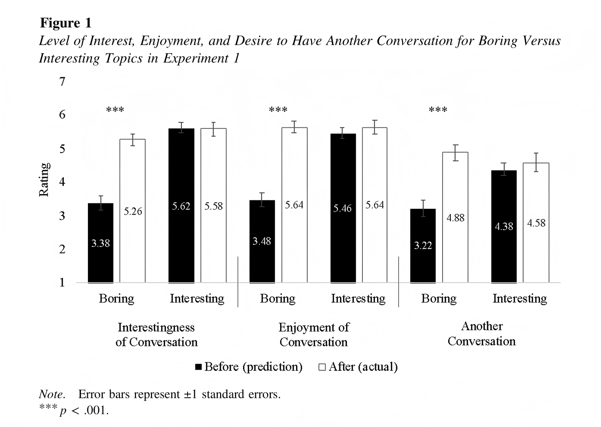
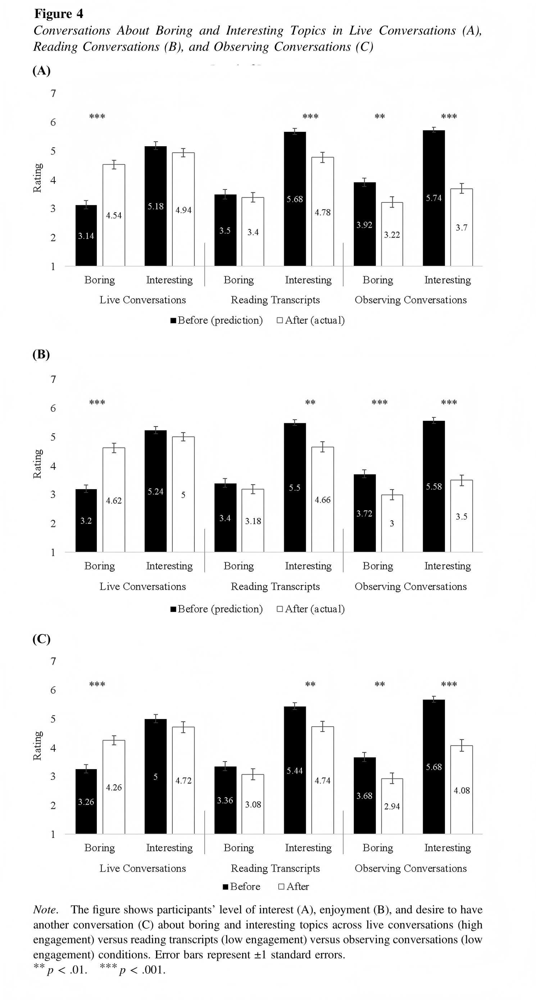
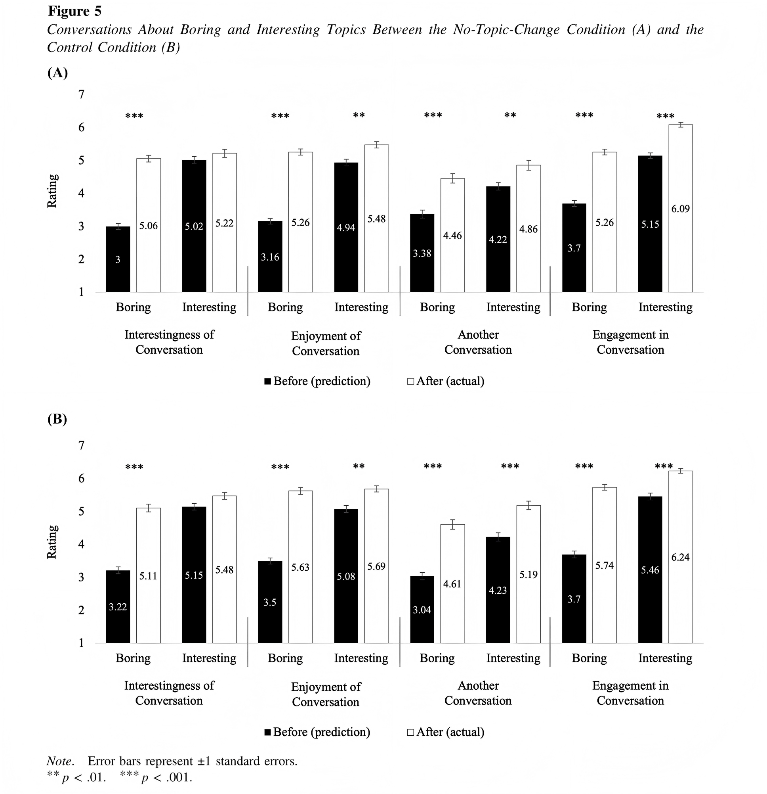
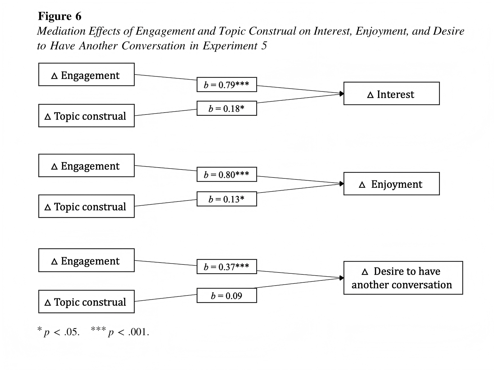

无聊的话题，真的会聊得无聊吗？
一项新研究发现：我们可能低估了“普通对话”带来的投入感、愉悦感和连接感。
核心反转
让对话变有趣的，不只有话题本身，还有实时回应、倾听、接话和共同推进的过程。
我们常常把“话题无聊”误判成“对话无聊”
你是不是也有过这种感觉：别人一提到运动、天气、通勤、健身、社交媒体趋势，第一反应就是“这有什么好聊的？”
但真正聊起来之后，情况可能并不一样。你需要回应对方，捕捉对方的语气，顺着话题补充自己的经验，也可能被一个细节带进新的思考。
我们是否系统性低估了无聊话题的实际对话体验？
这篇论文研究了什么？
Nicole Thio
Nadav Klein
Vol. 130, No. 6
总 N = 1,800
研究核心：比较人们在对话前的预测，与真实对话后的实际体验是否一致。
这组研究的基本逻辑：先预测，再真的聊
这篇论文最清楚的地方在于，它不是只问参与者“你觉得无聊话题会不会无聊”，而是让他们真正进入对话情境。
先判断话题兴趣
参与者先对一系列话题打分，例如运动、电影、社交媒体、人工智能、旅行、历史、环境保护等。
根据兴趣分配话题
研究者把某个话题安排成“对我有趣”或“对我无聊”的对话主题，并操纵对话对象、话题匹配方式和互动方式。
对话前做预测
参与者先预测：这段对话会有多有趣、多愉快，以及自己之后还想不想继续聊这个话题。
真实对话后再评价
完成 2–5 分钟真实对话，或阅读/观看相同对话内容后，再报告实际体验。研究重点就是“预测值”和“实际值”的差距。
一个人觉得无聊，另一个人觉得有趣：还会低估吗？
100名法国大学实验室参与者
参与者两两配对，通过 Zoom 进行面对面对话。
同一个话题，对两个人意义不同
研究者先让每个人评价10个话题的兴趣程度。随后选择一个话题：对其中一人非常有趣，对另一人很无聊。
先预测，后对话5分钟
对话前，参与者预测兴趣、愉悦和再次对话意愿；对话后，用同样指标评价真实体验。
无聊话题组低估最明显
认为话题无聊的人，在兴趣、愉悦和再次对话意愿上都明显低估了实际体验；而有趣话题组的预测相对更准确。

原论文 Fig. 1，位于论文第1170页。图中比较了无聊话题与有趣话题在兴趣、愉悦感、再次对话意愿上的预测值与实际值。
如果两个人都觉得话题无聊呢？
实验1可能有一个疑问：是不是因为有一方很感兴趣，所以把另一个人也带动起来了？实验2专门排除了这个解释。
190名参与者，组成对话配对
研究继续采用 Zoom 对话，并比较不同类型的配对。
两类对话组合
一类是“无聊—无聊”：双方都觉得这个话题无聊；另一类是“无聊—有趣”：一方无聊，一方有趣。
双方都无聊，也还是比预期好
即使两个人都觉得话题无聊，他们真实对话后的兴趣和愉悦感仍高于对话前预测。
不是“有人带热话题”这么简单
有一方感兴趣确实会让对话更好，但无聊话题的低估效应并不依赖于这个条件。
朋友之间会不会预测得更准？
如果是朋友，我们通常更了解对方，也更熟悉彼此的聊天风格。实验3把研究从实验室带到真实校园场景。
326名美国大学校园参与者
研究人员在校园开放空间中招募朋友配对和陌生人配对。
由参与者自己提出
每个人提出一个“自己觉得有趣，但可能会让对方无聊”的话题。每对参与者会分别聊双方提出的两个话题。
每个话题聊2分钟
对话前先预测，对话后再评价，指标仍然是兴趣、愉悦和再次对话意愿。
朋友和陌生人都会低估
朋友并没有完全避免这种预测偏差。即使了解对方，人们仍会低估无聊话题实际聊起来的体验。
关键不是内容本身，而是你有没有参与进去
实验4开始检验机制：让对话变得比预期更有趣的，是否是“互动投入感”？
300名新加坡成年参与者
每个条件最终保留100名参与者，样本包括较多工作成年人。
同样内容，不同参与程度
第一组亲自进行实时对话；第二组阅读这段对话的文字稿；第三组观看这段对话的录像。
把“内容”和“互动”拆开
阅读和观看条件接触的是同一段对话内容，但不需要实时回应、倾听和调整自己的表达。
低估主要出现在实时对话中
只有亲自参与对话时，无聊话题才明显比预期更有趣、更愉快。阅读或观看相同内容时，这种提升不明显，甚至可能被高估。

原论文 Fig. 4，位于论文第1178页。实验4比较三种条件：Live Conversations、Reading Transcripts、Observing Conversations。
是不是因为话题聊着聊着跑偏了？
还有一种可能：无聊话题并没有真的变有趣，只是两个人后来把话题转走了。实验5专门检验这个解释。
固定话题 vs 自然演变
一部分参与者被要求尽量停留在指定话题上，另一部分可以让话题像真实聊天一样自然发展。
同时测投入感和话题评价
研究者不仅看预测和实际体验差距，也测量参与者实际有多投入，以及他们事后是否把话题评价得更积极。
谁解释了预测—体验差距？
结果显示，投入感能更稳定地解释“实际体验比预测更好”；话题变得更积极也有作用，但解释力较小。
不是单纯因为话题变了
即使要求参与者停留在原本的无聊话题上，他们依然低估了对话体验。真正关键的是实时互动带来的投入。

原论文 Fig. 5，位于论文第1181页。实验5比较 No-topic-change condition 和 Control condition。

原论文 Fig. 6，位于论文第1183页。该图展示 engagement 和 topic construal 对兴趣、愉悦感、再次对话意愿差距的中介效应。
人们确实低估了无聊话题的“可聊性”
1无聊话题，实际聊起来更有趣
实验1中，觉得话题无聊的参与者明显低估了实际对话的兴趣和愉悦感。也就是说，预测时觉得“不想聊”，聊完后却发现“还不错”。
2不是因为对方很感兴趣
实验2发现，即使双方都觉得话题无聊，实际对话仍然比预期更有趣、更愉快。这说明效果不完全依赖于“有一个人把话题带热”。
朋友和陌生人，都会出现这种预测偏差
3熟人也会低估无聊话题
实验3把朋友和陌生人都纳入研究。结果显示，无论对方是熟人还是陌生人，人们都会低估无聊话题带来的兴趣、享受和再次对话意愿。
4关键机制是“投入感”
实验4和实验5进一步说明：人们预测时容易盯着话题本身，但真实对话中，回应、倾听和实时互动会带来更高的心理投入感。
话题是静态线索，容易提前判断；投入感是动态过程，只有聊起来才会出现。
这项研究并不是劝你接受所有尬聊
话题确实重要，但它不是全部。很多时候，对话的价值来自对方如何回应、你如何接住，以及互动如何展开。
如果我们过度相信“这个话题一定很无聊”，就可能提前避开一些实际上还不错的交流机会。
无聊的，可能不是话题，而是我们对它的预判
这篇研究通过多项预注册实验发现，人们会系统性低估无聊话题对话的兴趣、愉悦感和再次对话意愿。
这种低估并不只发生在陌生人之间，也发生在朋友之间；也不完全依赖于有一方特别感兴趣。